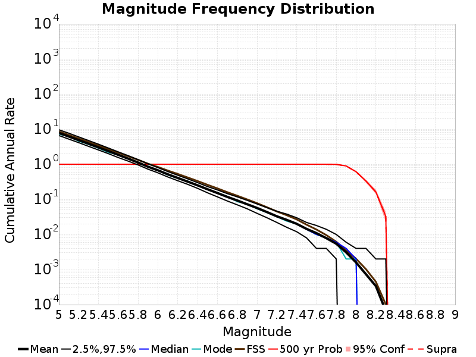

Start 2012, 500 yr, kCOV=1.5, Spontaneous, Historical Catalog Results
| Start 2012, 500 yr, kCOV=1.5, Spontaneous, Historical Catalog |
|---|
| Num Simulations | 1000 |
| Start Time | 2012/01/01 00:00:00 UTC |
| Start Time Epoch Milliseconds | 1325376000000 |
| Duration | 500 Years |
| Includes Spontaneous? | true |
| Trigger Ruptures | (none) |
| Historical Ruptures | 60366 Trigger Ruptures |
| First: M7.3 at 1852/01/05 04:40:39 UTC |
| Last: M3.2 at 2011/12/31 19:14:44 UTC |
| Largest: M7.9 at 1857/01/09 16:25:39 UTC |
| Config Generated With | u3etas_config_builder.sh --start-year 2012 --num-simulations 1000 --duration-years 500 --include-spontaneous --historical-catalog --etas-k-cov 1.5 --random-seed 123456789 --hpc-site USC_HPC --nodes 36 --hours 24 --queue scec |
Table Of Contents
Magnitude Frequency Distribution
(top)
Legend
- Mean (thick black line): mean annual rate across all 1000 catalogs
- 2.5%,97.5% (thin black lines): annual rate percentiles across all 1000 catalogs
- Median (thin blue line): median annual rate across all 1000 catalogs
- Mode (thin cyan line): modal annual rate across all 1000 catalogs (scaled to annualized value)
- Fault System Solution (brown line): long-term MFD from the UCERF3 fault system solution
- 500 yr Probability (thin red line): 500 year probability calculated as the fraction of catalogs with at least 1 occurrence
- 500 yr Supraseismogenic Probability (thin dashed red line): same as above, but only for supraseismogenic ruptures on explicitly modeled UCERF3 faults
- 95% Conf (light red shaded region): binomial 95% confidence bounds on probability

| Mag | Mean | 2.5 %ile | 97.5 %ile | Median | Mode | Long-Term Fault System Solution | 500 yr Probability | 500 yr Prob 95% Conf | 500 yr Supra-Seis Prob |
|---|
| M≥5 | 7.797 | 6.590 | 9.608 | 7.676 | 7.178 | 8.609 | 1.000 (100.00%) | [99.52% 100.00%] | 1.000 (100.00%) |
| M≥5.1 | 6.166 | 5.210 | 7.658 | 6.068 | 6.196 | 6.830 | 1.000 (100.00%) | [99.52% 100.00%] | 1.000 (100.00%) |
| M≥5.2 | 4.869 | 4.126 | 6.014 | 4.800 | 4.544 | 5.417 | 1.000 (100.00%) | [99.52% 100.00%] | 1.000 (100.00%) |
| M≥5.3 | 3.838 | 3.234 | 4.732 | 3.790 | 3.670 | 4.295 | 1.000 (100.00%) | [99.52% 100.00%] | 1.000 (100.00%) |
| M≥5.4 | 3.020 | 2.552 | 3.722 | 2.980 | 2.866 | 3.404 | 1.000 (100.00%) | [99.52% 100.00%] | 1.000 (100.00%) |
| M≥5.5 | 2.372 | 2.004 | 2.894 | 2.342 | 2.188 | 2.696 | 1.000 (100.00%) | [99.52% 100.00%] | 1.000 (100.00%) |
| M≥5.6 | 1.854 | 1.550 | 2.250 | 1.836 | 1.838 | 2.133 | 1.000 (100.00%) | [99.52% 100.00%] | 1.000 (100.00%) |
| M≥5.7 | 1.444 | 1.228 | 1.756 | 1.428 | 1.450 | 1.686 | 1.000 (100.00%) | [99.52% 100.00%] | 1.000 (100.00%) |
| M≥5.8 | 1.119 | 0.958 | 1.354 | 1.108 | 1.082 | 1.331 | 1.000 (100.00%) | [99.52% 100.00%] | 1.000 (100.00%) |
| M≥5.9 | 0.852 | 0.724 | 1.032 | 0.844 | 0.850 | 1.036 | 1.000 (100.00%) | [99.52% 100.00%] | 1.000 (100.00%) |
| M≥6 | 0.672 | 0.570 | 0.802 | 0.666 | 0.666 | 0.836 | 1.000 (100.00%) | [99.52% 100.00%] | 1.000 (100.00%) |
| M≥6.1 | 0.517 | 0.434 | 0.618 | 0.512 | 0.494 | 0.660 | 1.000 (100.00%) | [99.52% 100.00%] | 1.000 (100.00%) |
| M≥6.2 | 0.407 | 0.340 | 0.486 | 0.404 | 0.394 | 0.529 | 1.000 (100.00%) | [99.52% 100.00%] | 1.000 (100.00%) |
| M≥6.3 | 0.320 | 0.268 | 0.384 | 0.318 | 0.332 | 0.420 | 1.000 (100.00%) | [99.52% 100.00%] | 1.000 (100.00%) |
| M≥6.4 | 0.251 | 0.206 | 0.300 | 0.250 | 0.250 | 0.332 | 1.000 (100.00%) | [99.52% 100.00%] | 1.000 (100.00%) |
| M≥6.5 | 0.194 | 0.154 | 0.232 | 0.194 | 0.190 | 0.260 | 1.000 (100.00%) | [99.52% 100.00%] | 1.000 (100.00%) |
| M≥6.6 | 0.152 | 0.118 | 0.186 | 0.152 | 0.156 | 0.205 | 1.000 (100.00%) | [99.52% 100.00%] | 1.000 (100.00%) |
| M≥6.7 | 0.118 | 0.090 | 0.146 | 0.118 | 0.122 | 0.160 | 1.000 (100.00%) | [99.52% 100.00%] | 1.000 (100.00%) |
| M≥6.8 | 0.093 | 0.070 | 0.118 | 0.092 | 0.086 | 0.127 | 1.000 (100.00%) | [99.52% 100.00%] | 1.000 (100.00%) |
| M≥6.9 | 0.073 | 0.054 | 0.094 | 0.072 | 0.074 | 0.100 | 1.000 (100.00%) | [99.52% 100.00%] | 1.000 (100.00%) |
| M≥7 | 0.057 | 0.040 | 0.074 | 0.056 | 0.054 | 0.078 | 1.000 (100.00%) | [99.52% 100.00%] | 1.000 (100.00%) |
| M≥7.1 | 0.044 | 0.030 | 0.058 | 0.044 | 0.042 | 0.060 | 1.000 (100.00%) | [99.52% 100.00%] | 1.000 (100.00%) |
| M≥7.2 | 0.033 | 0.022 | 0.046 | 0.032 | 0.032 | 0.045 | 1.000 (100.00%) | [99.52% 100.00%] | 1.000 (100.00%) |
| M≥7.3 | 0.026 | 0.016 | 0.038 | 0.026 | 0.024 | 0.035 | 1.000 (100.00%) | [99.52% 100.00%] | 1.000 (100.00%) |
| M≥7.4 | 0.020 | 0.012 | 0.030 | 0.020 | 0.020 | 0.027 | 1.000 (100.00%) | [99.52% 100.00%] | 1.000 (100.00%) |
| M≥7.5 | 0.014 | 8.00E-3 | 0.022 | 0.014 | 0.014 | 0.019 | 1.000 (100.00%) | [99.52% 100.00%] | 1.000 (100.00%) |
| M≥7.6 | 0.011 | 4.00E-3 | 0.018 | 0.010 | 0.010 | 0.014 | 1.000 (100.00%) | [99.52% 100.00%] | 1.000 (100.00%) |
| M≥7.7 | 7.85E-3 | 4.00E-3 | 0.014 | 8.00E-3 | 8.00E-3 | 9.58E-3 | 1.000 (100.00%) | [99.52% 100.00%] | 1.000 (100.00%) |
| M≥7.8 | 5.45E-3 | 2.00E-3 | 0.010 | 6.00E-3 | 6.00E-3 | 6.19E-3 | 0.992 (99.20%) | [98.36% 99.63%] | 0.992 (99.20%) |
| M≥7.9 | 3.10E-3 | 0.000 | 6.00E-3 | 4.00E-3 | 2.00E-3 | 3.51E-3 | 0.894 (89.40%) | [87.29% 91.21%] | 0.894 (89.40%) |
| M≥8 | 1.60E-3 | 0.000 | 4.00E-3 | 2.00E-3 | 2.00E-3 | 2.03E-3 | 0.610 (61.00%) | [57.89% 64.02%] | 0.610 (61.00%) |
| M≥8.1 | 7.36E-4 | 0.000 | 4.00E-3 | 0.000 | 0.000 | 1.02E-3 | 0.333 (33.30%) | [30.40% 36.33%] | 0.333 (33.30%) |
| M≥8.2 | 3.38E-4 | 0.000 | 2.00E-3 | 0.000 | 0.000 | 4.48E-4 | 0.162 (16.20%) | [14.00% 18.66%] | 0.162 (16.20%) |
| M≥8.3 | 6.60E-5 | 0.000 | 2.00E-3 | 0.000 | 0.000 | 1.02E-4 | 0.033 (3.30%) | [2.32% 4.66%] | 0.033 (3.30%) |
| M≥8.4 | 0.000 | 0.000 | 0.000 | 0.000 | 0.000 | 0.000 | 0.000 (0.00%) | [0.00% 0.48%] | 0.000 (0.00%) |
| M≥8.5 | 0.000 | 0.000 | 0.000 | 0.000 | 0.000 | 0.000 | 0.000 (0.00%) | [0.00% 0.48%] | 0.000 (0.00%) |
| M≥8.6 | 0.000 | 0.000 | 0.000 | 0.000 | 0.000 | 0.000 | 0.000 (0.00%) | [0.00% 0.48%] | 0.000 (0.00%) |
| M≥8.7 | 0.000 | 0.000 | 0.000 | 0.000 | 0.000 | 0.000 | 0.000 (0.00%) | [0.00% 0.48%] | 0.000 (0.00%) |
| M≥8.8 | 0.000 | 0.000 | 0.000 | 0.000 | 0.000 | 0.000 | 0.000 (0.00%) | [0.00% 0.48%] | 0.000 (0.00%) |
| M≥8.9 | 0.000 | 0.000 | 0.000 | 0.000 | 0.000 | 0.000 | 0.000 (0.00%) | [0.00% 0.48%] | 0.000 (0.00%) |
| M≥9 | 0.000 | 0.000 | 0.000 | 0.000 | 0.000 | 0.000 | 0.000 (0.00%) | [0.00% 0.48%] | 0.000 (0.00%) |
Long Term Rate Variability
(top)
162 Year Variability
(top)
Download CSV Here
| Magnitude | Mean | Median | Mode | Std. Dev. | 2.5 %-ile | 16 %-ile | 84 %-ile | 97.5 %-ile |
|---|
| 5.0 | 7.797747 | 7.537037 | 7.308642 | 1.4415379 | 6.0185184 | 6.660494 | 8.858025 | 11.1049385 |
| 5.1 | 6.1666255 | 5.962963 | 5.6049385 | 1.1373208 | 4.740741 | 5.259259 | 7.012346 | 8.722222 |
| 5.2 | 4.868574 | 4.716049 | 4.4382715 | 0.8937426 | 3.728395 | 4.154321 | 5.5185184 | 6.845679 |
| 5.3 | 3.8386133 | 3.7222223 | 3.4567902 | 0.6975667 | 2.9135802 | 3.271605 | 4.351852 | 5.4012346 |
| 5.4 | 3.0202324 | 2.9320989 | 2.8950617 | 0.53997976 | 2.2962964 | 2.580247 | 3.425926 | 4.2098765 |
| 5.5 | 2.3720555 | 2.308642 | 2.1419754 | 0.42062816 | 1.7962962 | 2.0246913 | 2.6975307 | 3.2654321 |
| 5.6 | 1.8545041 | 1.8024691 | 1.7098765 | 0.3242899 | 1.4012346 | 1.5864197 | 2.1111112 | 2.5493827 |
| 5.7 | 1.4441975 | 1.4074074 | 1.3395061 | 0.24527937 | 1.0864197 | 1.2345679 | 1.6419753 | 1.9567901 |
| 5.8 | 1.1185535 | 1.0925926 | 1.074074 | 0.18503687 | 0.845679 | 0.962963 | 1.2777778 | 1.4938271 |
| 5.9 | 0.85173047 | 0.8333333 | 0.7839506 | 0.1379496 | 0.6419753 | 0.72839504 | 0.9691358 | 1.1481482 |
| 6.0 | 0.6720288 | 0.66049385 | 0.6419753 | 0.10541648 | 0.5 | 0.5740741 | 0.7654321 | 0.90123457 |
| 6.1 | 0.5173498 | 0.5123457 | 0.5185185 | 0.08357074 | 0.37654322 | 0.4382716 | 0.59876543 | 0.69135803 |
| 6.2 | 0.4071749 | 0.40123457 | 0.3888889 | 0.06640805 | 0.29012346 | 0.34567901 | 0.4691358 | 0.54320985 |
| 6.3 | 0.32039094 | 0.3148148 | 0.30864197 | 0.054220248 | 0.22222222 | 0.2654321 | 0.37654322 | 0.43209878 |
| 6.4 | 0.2509136 | 0.24691358 | 0.25308642 | 0.044570357 | 0.17283951 | 0.2037037 | 0.2962963 | 0.34567901 |
| 6.5 | 0.19440329 | 0.19135803 | 0.18518518 | 0.03744709 | 0.12345679 | 0.16049382 | 0.22839506 | 0.27160493 |
| 6.6 | 0.15161318 | 0.14814815 | 0.15432099 | 0.031663522 | 0.09259259 | 0.11728395 | 0.18518518 | 0.21604939 |
| 6.7 | 0.11767696 | 0.11728395 | 0.11728395 | 0.026823983 | 0.074074075 | 0.09259259 | 0.14197531 | 0.17283951 |
| 6.8 | 0.092938274 | 0.09259259 | 0.09259259 | 0.023010837 | 0.049382716 | 0.06790123 | 0.11728395 | 0.14197531 |
| 6.9 | 0.07260494 | 0.074074075 | 0.06790123 | 0.019913979 | 0.037037037 | 0.049382716 | 0.09259259 | 0.11111111 |
| 7.0 | 0.056814816 | 0.055555556 | 0.055555556 | 0.017002687 | 0.024691358 | 0.037037037 | 0.074074075 | 0.09259259 |
| 7.1 | 0.043442387 | 0.043209877 | 0.043209877 | 0.014979635 | 0.018518519 | 0.030864198 | 0.055555556 | 0.074074075 |
| 7.2 | 0.032886833 | 0.030864198 | 0.030864198 | 0.012711226 | 0.012345679 | 0.018518519 | 0.043209877 | 0.061728396 |
| 7.3 | 0.02596502 | 0.024691358 | 0.024691358 | 0.011025314 | 0.0061728396 | 0.012345679 | 0.037037037 | 0.049382716 |
| 7.4 | 0.020063786 | 0.018518519 | 0.018518519 | 0.0095265815 | 0.0061728396 | 0.012345679 | 0.030864198 | 0.043209877 |
| 7.5 | 0.01436214 | 0.012345679 | 0.012345679 | 0.007841758 | 0.0 | 0.0061728396 | 0.024691358 | 0.030864198 |
| 7.6 | 0.010895061 | 0.012345679 | 0.0061728396 | 0.006631594 | 0.0 | 0.0061728396 | 0.018518519 | 0.024691358 |
| 7.7 | 0.007835391 | 0.0061728396 | 0.0061728396 | 0.005375615 | 0.0 | 0.0 | 0.012345679 | 0.018518519 |
| 7.8 | 0.005446502 | 0.0061728396 | 0.0061728396 | 0.0044111325 | 0.0 | 0.0 | 0.012345679 | 0.012345679 |
| 7.9 | 0.00309465 | 0.0 | 0.0 | 0.0035609088 | 0.0 | 0.0 | 0.0061728396 | 0.012345679 |
| 8.0 | 0.0015987654 | 0.0 | 0.0 | 0.002824181 | 0.0 | 0.0 | 0.0061728396 | 0.0061728396 |
| 8.1 | 7.2427985E-4 | 0.0 | 0.0 | 0.001999605 | 0.0 | 0.0 | 0.0 | 0.0061728396 |
| 8.2 | 3.3539094E-4 | 0.0 | 0.0 | 0.0013994571 | 0.0 | 0.0 | 0.0 | 0.0061728396 |
| 8.3 | 6.1728395E-5 | 0.0 | 0.0 | 6.1429216E-4 | 0.0 | 0.0 | 0.0 | 0.0 |
| 8.4 | 0.0 | 0.0 | 0.0 | 0.0 | 0.0 | 0.0 | 0.0 | 0.0 |
| 8.5 | 0.0 | 0.0 | 0.0 | 0.0 | 0.0 | 0.0 | 0.0 | 0.0 |
| 8.6 | 0.0 | 0.0 | 0.0 | 0.0 | 0.0 | 0.0 | 0.0 | 0.0 |
| 8.7 | 0.0 | 0.0 | 0.0 | 0.0 | 0.0 | 0.0 | 0.0 | 0.0 |
| 8.8 | 0.0 | 0.0 | 0.0 | 0.0 | 0.0 | 0.0 | 0.0 | 0.0 |
| 8.9 | 0.0 | 0.0 | 0.0 | 0.0 | 0.0 | 0.0 | 0.0 | 0.0 |
| 9.0 | 0.0 | 0.0 | 0.0 | 0.0 | 0.0 | 0.0 | 0.0 | 0.0 |
80 Year Variability
(top)
Download CSV Here
| Magnitude | Mean | Median | Mode | Std. Dev. | 2.5 %-ile | 16 %-ile | 84 %-ile | 97.5 %-ile |
|---|
| 5.0 | 7.8006043 | 7.3875 | 6.9375 | 2.014518 | 5.575 | 6.325 | 9.0875 | 12.4125 |
| 5.1 | 6.169029 | 5.85 | 5.45 | 1.5880059 | 4.4 | 5.0 | 7.1875 | 9.8125 |
| 5.2 | 4.8704376 | 4.625 | 4.3625 | 1.2460116 | 3.45 | 3.9375 | 5.6875 | 7.6875 |
| 5.3 | 3.8401582 | 3.6625 | 3.4375 | 0.9720396 | 2.7 | 3.1 | 4.4875 | 6.0 |
| 5.4 | 3.021448 | 2.875 | 2.8 | 0.7540192 | 2.1125 | 2.4375 | 3.55 | 4.7 |
| 5.5 | 2.3729916 | 2.2625 | 2.225 | 0.5880569 | 1.65 | 1.9125 | 2.8 | 3.6625 |
| 5.6 | 1.8553417 | 1.775 | 1.6375 | 0.4516436 | 1.275 | 1.5 | 2.1875 | 2.85 |
| 5.7 | 1.4446855 | 1.3875 | 1.3625 | 0.34203714 | 0.9875 | 1.1625 | 1.7 | 2.1875 |
| 5.8 | 1.1189271 | 1.0875 | 0.9625 | 0.2562167 | 0.75 | 0.9 | 1.325 | 1.675 |
| 5.9 | 0.85213333 | 0.825 | 0.8 | 0.19082211 | 0.5625 | 0.6875 | 1.0125 | 1.2625 |
| 6.0 | 0.6723104 | 0.65 | 0.6125 | 0.14644116 | 0.4375 | 0.5375 | 0.8 | 0.9875 |
| 6.1 | 0.51752293 | 0.5 | 0.5 | 0.11553517 | 0.325 | 0.4125 | 0.625 | 0.7625 |
| 6.2 | 0.40729168 | 0.4 | 0.3875 | 0.09312512 | 0.25 | 0.3125 | 0.4875 | 0.6125 |
| 6.3 | 0.32049584 | 0.3125 | 0.3 | 0.077187724 | 0.1875 | 0.25 | 0.4 | 0.4875 |
| 6.4 | 0.25100416 | 0.25 | 0.225 | 0.06466662 | 0.1375 | 0.1875 | 0.3125 | 0.3875 |
| 6.5 | 0.1945375 | 0.1875 | 0.1875 | 0.054779243 | 0.1 | 0.1375 | 0.25 | 0.3125 |
| 6.6 | 0.1516625 | 0.15 | 0.15 | 0.046181682 | 0.075 | 0.1 | 0.2 | 0.25 |
| 6.7 | 0.11772291 | 0.1125 | 0.1125 | 0.03974122 | 0.05 | 0.075 | 0.1625 | 0.2 |
| 6.8 | 0.0929625 | 0.0875 | 0.0875 | 0.03458905 | 0.0375 | 0.0625 | 0.125 | 0.1625 |
| 6.9 | 0.07261667 | 0.075 | 0.0625 | 0.0303168 | 0.025 | 0.0375 | 0.1 | 0.1375 |
| 7.0 | 0.056808334 | 0.05 | 0.05 | 0.0263453 | 0.0125 | 0.025 | 0.0875 | 0.1125 |
| 7.1 | 0.04344167 | 0.0375 | 0.0375 | 0.022971747 | 0.0 | 0.025 | 0.0625 | 0.1 |
| 7.2 | 0.032875 | 0.025 | 0.025 | 0.01944612 | 0.0 | 0.0125 | 0.05 | 0.075 |
| 7.3 | 0.025952084 | 0.025 | 0.025 | 0.016965063 | 0.0 | 0.0125 | 0.0375 | 0.0625 |
| 7.4 | 0.020045834 | 0.0125 | 0.0125 | 0.014748686 | 0.0 | 0.0 | 0.0375 | 0.05 |
| 7.5 | 0.014366667 | 0.0125 | 0.0125 | 0.012242299 | 0.0 | 0.0 | 0.025 | 0.0375 |
| 7.6 | 0.01090625 | 0.0125 | 0.0125 | 0.010478357 | 0.0 | 0.0 | 0.025 | 0.0375 |
| 7.7 | 0.007841666 | 0.0125 | 0.0 | 0.0087160105 | 0.0 | 0.0 | 0.0125 | 0.025 |
| 7.8 | 0.0054458333 | 0.0 | 0.0 | 0.0071942876 | 0.0 | 0.0 | 0.0125 | 0.025 |
| 7.9 | 0.0030958334 | 0.0 | 0.0 | 0.00564619 | 0.0 | 0.0 | 0.0125 | 0.0125 |
| 8.0 | 0.0015958333 | 0.0 | 0.0 | 0.0042276424 | 0.0 | 0.0 | 0.0 | 0.0125 |
| 8.1 | 7.2708336E-4 | 0.0 | 0.0 | 0.0029259732 | 0.0 | 0.0 | 0.0 | 0.0125 |
| 8.2 | 3.375E-4 | 0.0 | 0.0 | 0.0020262103 | 0.0 | 0.0 | 0.0 | 0.0125 |
| 8.3 | 6.25E-5 | 0.0 | 0.0 | 8.817445E-4 | 0.0 | 0.0 | 0.0 | 0.0 |
| 8.4 | 0.0 | 0.0 | 0.0 | 0.0 | 0.0 | 0.0 | 0.0 | 0.0 |
| 8.5 | 0.0 | 0.0 | 0.0 | 0.0 | 0.0 | 0.0 | 0.0 | 0.0 |
| 8.6 | 0.0 | 0.0 | 0.0 | 0.0 | 0.0 | 0.0 | 0.0 | 0.0 |
| 8.7 | 0.0 | 0.0 | 0.0 | 0.0 | 0.0 | 0.0 | 0.0 | 0.0 |
| 8.8 | 0.0 | 0.0 | 0.0 | 0.0 | 0.0 | 0.0 | 0.0 | 0.0 |
| 8.9 | 0.0 | 0.0 | 0.0 | 0.0 | 0.0 | 0.0 | 0.0 | 0.0 |
| 9.0 | 0.0 | 0.0 | 0.0 | 0.0 | 0.0 | 0.0 | 0.0 | 0.0 |
28 Year Variability
(top)
Download CSV Here
| Magnitude | Mean | Median | Mode | Std. Dev. | 2.5 %-ile | 16 %-ile | 84 %-ile | 97.5 %-ile |
|---|
| 5.0 | 7.802504 | 7.071429 | 6.357143 | 3.2852318 | 4.857143 | 5.75 | 9.5 | 15.142858 |
| 5.1 | 6.170523 | 5.607143 | 5.035714 | 2.5880208 | 3.7857144 | 4.535714 | 7.5 | 11.928572 |
| 5.2 | 4.8715334 | 4.428571 | 4.107143 | 2.0293725 | 2.9642856 | 3.5714285 | 5.928571 | 9.357142 |
| 5.3 | 3.840981 | 3.5 | 3.107143 | 1.5858325 | 2.2857144 | 2.7857144 | 4.714286 | 7.357143 |
| 5.4 | 3.0219412 | 2.7857144 | 2.607143 | 1.2332937 | 1.75 | 2.1785715 | 3.7142856 | 5.75 |
| 5.5 | 2.3733823 | 2.1785715 | 1.9285715 | 0.96124876 | 1.3571428 | 1.7142857 | 2.9285715 | 4.5 |
| 5.6 | 1.8554748 | 1.7142857 | 1.5714285 | 0.7412356 | 1.0 | 1.3214285 | 2.3214285 | 3.5 |
| 5.7 | 1.4448172 | 1.3571428 | 1.2142857 | 0.5647651 | 0.75 | 1.0357143 | 1.8214285 | 2.6785715 |
| 5.8 | 1.1189097 | 1.0357143 | 0.96428573 | 0.42614615 | 0.5714286 | 0.78571427 | 1.4285715 | 2.0357144 |
| 5.9 | 0.85208404 | 0.8214286 | 0.71428573 | 0.31993154 | 0.42857143 | 0.5714286 | 1.1071428 | 1.5714285 |
| 6.0 | 0.6722563 | 0.64285713 | 0.64285713 | 0.24781103 | 0.32142857 | 0.4642857 | 0.89285713 | 1.2142857 |
| 6.1 | 0.5174622 | 0.5 | 0.4642857 | 0.19607034 | 0.21428572 | 0.32142857 | 0.6785714 | 0.96428573 |
| 6.2 | 0.4072269 | 0.39285713 | 0.32142857 | 0.15961573 | 0.14285715 | 0.25 | 0.53571427 | 0.78571427 |
| 6.3 | 0.32042646 | 0.32142857 | 0.2857143 | 0.13384372 | 0.10714286 | 0.17857143 | 0.42857143 | 0.60714287 |
| 6.4 | 0.2509727 | 0.25 | 0.21428572 | 0.11268786 | 0.071428575 | 0.14285715 | 0.35714287 | 0.5 |
| 6.5 | 0.19451681 | 0.17857143 | 0.17857143 | 0.09553761 | 0.035714287 | 0.10714286 | 0.2857143 | 0.39285713 |
| 6.6 | 0.15166177 | 0.14285715 | 0.14285715 | 0.081913754 | 0.035714287 | 0.071428575 | 0.21428572 | 0.32142857 |
| 6.7 | 0.11770588 | 0.10714286 | 0.10714286 | 0.07042402 | 0.0 | 0.035714287 | 0.17857143 | 0.2857143 |
| 6.8 | 0.092947476 | 0.071428575 | 0.071428575 | 0.061044708 | 0.0 | 0.035714287 | 0.14285715 | 0.21428572 |
| 6.9 | 0.072588235 | 0.071428575 | 0.035714287 | 0.053224575 | 0.0 | 0.035714287 | 0.10714286 | 0.17857143 |
| 7.0 | 0.056785714 | 0.035714287 | 0.035714287 | 0.04657701 | 0.0 | 0.0 | 0.10714286 | 0.17857143 |
| 7.1 | 0.043441176 | 0.035714287 | 0.035714287 | 0.04050397 | 0.0 | 0.0 | 0.071428575 | 0.14285715 |
| 7.2 | 0.032865547 | 0.035714287 | 0.0 | 0.034722343 | 0.0 | 0.0 | 0.071428575 | 0.10714286 |
| 7.3 | 0.025943277 | 0.035714287 | 0.0 | 0.030513402 | 0.0 | 0.0 | 0.071428575 | 0.10714286 |
| 7.4 | 0.020044118 | 0.0 | 0.0 | 0.026738495 | 0.0 | 0.0 | 0.035714287 | 0.071428575 |
| 7.5 | 0.014352941 | 0.0 | 0.0 | 0.022509063 | 0.0 | 0.0 | 0.035714287 | 0.071428575 |
| 7.6 | 0.010892857 | 0.0 | 0.0 | 0.019407239 | 0.0 | 0.0 | 0.035714287 | 0.071428575 |
| 7.7 | 0.007842437 | 0.0 | 0.0 | 0.016231656 | 0.0 | 0.0 | 0.035714287 | 0.035714287 |
| 7.8 | 0.0054516806 | 0.0 | 0.0 | 0.013399568 | 0.0 | 0.0 | 0.0 | 0.035714287 |
| 7.9 | 0.0030966387 | 0.0 | 0.0 | 0.0101691745 | 0.0 | 0.0 | 0.0 | 0.035714287 |
| 8.0 | 0.0016008404 | 0.0 | 0.0 | 0.0074002338 | 0.0 | 0.0 | 0.0 | 0.035714287 |
| 8.1 | 7.289916E-4 | 0.0 | 0.0 | 0.0050502955 | 0.0 | 0.0 | 0.0 | 0.0 |
| 8.2 | 3.382353E-4 | 0.0 | 0.0 | 0.0034592098 | 0.0 | 0.0 | 0.0 | 0.0 |
| 8.3 | 6.302521E-5 | 0.0 | 0.0 | 0.0014990198 | 0.0 | 0.0 | 0.0 | 0.0 |
| 8.4 | 0.0 | 0.0 | 0.0 | 0.0 | 0.0 | 0.0 | 0.0 | 0.0 |
| 8.5 | 0.0 | 0.0 | 0.0 | 0.0 | 0.0 | 0.0 | 0.0 | 0.0 |
| 8.6 | 0.0 | 0.0 | 0.0 | 0.0 | 0.0 | 0.0 | 0.0 | 0.0 |
| 8.7 | 0.0 | 0.0 | 0.0 | 0.0 | 0.0 | 0.0 | 0.0 | 0.0 |
| 8.8 | 0.0 | 0.0 | 0.0 | 0.0 | 0.0 | 0.0 | 0.0 | 0.0 |
| 8.9 | 0.0 | 0.0 | 0.0 | 0.0 | 0.0 | 0.0 | 0.0 | 0.0 |
| 9.0 | 0.0 | 0.0 | 0.0 | 0.0 | 0.0 | 0.0 | 0.0 | 0.0 |
Variability Duration Dependence
(top)
Download CSV Here
| Duration (years) | Mean | Median | Mode | Std. Dev. | 2.5 %-ile | 16 %-ile | 84 %-ile | 97.5 %-ile |
|---|
| 1.0 | 7.797442 | 6.0 | 5.0 | 12.929882 | 1.0 | 3.0 | 11.0 | 25.0 |
| 4.0 | 7.797442 | 6.5 | 5.75 | 7.474905 | 3.0 | 4.5 | 10.0 | 21.25 |
| 8.0 | 7.799004 | 6.625 | 6.0 | 5.5915904 | 3.75 | 5.0 | 9.75 | 19.125 |
| 12.0 | 7.798183 | 6.75 | 5.75 | 4.7345185 | 4.1666665 | 5.25 | 9.666667 | 17.916666 |
| 16.0 | 7.799004 | 6.875 | 6.1875 | 4.1871157 | 4.4375 | 5.375 | 9.625 | 16.9375 |
| 20.0 | 7.797442 | 6.95 | 6.05 | 3.7920523 | 4.6 | 5.55 | 9.55 | 16.35 |
| 24.0 | 7.8006043 | 7.0416665 | 6.1666665 | 3.507891 | 4.75 | 5.6666665 | 9.5 | 15.666667 |
| 28.0 | 7.802504 | 7.071429 | 6.357143 | 3.2852318 | 4.857143 | 5.75 | 9.5 | 15.142858 |
| 32.0 | 7.8006043 | 7.125 | 6.40625 | 3.1120865 | 4.9375 | 5.8125 | 9.40625 | 14.75 |
| 36.0 | 7.81278 | 7.1666665 | 6.611111 | 2.9323785 | 5.0277777 | 5.888889 | 9.416667 | 14.472222 |
| 40.0 | 7.8006043 | 7.175 | 6.975 | 2.7915776 | 5.125 | 5.95 | 9.35 | 13.975 |
| 44.0 | 7.799345 | 7.2272725 | 6.8636365 | 2.7032757 | 5.181818 | 6.0 | 9.318182 | 13.727273 |
| 48.0 | 7.8006043 | 7.25 | 6.4583335 | 2.5751708 | 5.2291665 | 6.0416665 | 9.3125 | 13.479167 |
| 52.0 | 7.81278 | 7.269231 | 6.7115383 | 2.515427 | 5.269231 | 6.1153846 | 9.25 | 13.365385 |
| 56.0 | 7.8188324 | 7.303571 | 6.357143 | 2.4300609 | 5.357143 | 6.142857 | 9.321428 | 13.125 |
| 60.0 | 7.8006043 | 7.3166666 | 6.9 | 2.3077004 | 5.366667 | 6.1833334 | 9.216666 | 13.0 |
| 64.0 | 7.8188324 | 7.34375 | 6.546875 | 2.2910483 | 5.421875 | 6.203125 | 9.234375 | 12.859375 |
| 68.0 | 7.802504 | 7.352941 | 7.132353 | 2.1848805 | 5.470588 | 6.220588 | 9.161765 | 12.617647 |
| 72.0 | 7.8255324 | 7.375 | 6.9305553 | 2.1396825 | 5.5 | 6.2777777 | 9.194445 | 12.555555 |
| 76.0 | 7.8139606 | 7.381579 | 6.881579 | 2.082384 | 5.5526314 | 6.3157897 | 9.131579 | 12.486842 |
| 80.0 | 7.8006043 | 7.3875 | 6.9375 | 2.014518 | 5.575 | 6.325 | 9.0875 | 12.4125 |
| 84.0 | 7.828226 | 7.404762 | 7.2619047 | 2.0037022 | 5.607143 | 6.357143 | 9.142858 | 12.25 |
| 88.0 | 7.8236704 | 7.443182 | 7.7386365 | 1.9614058 | 5.659091 | 6.409091 | 9.102273 | 12.170455 |
| 92.0 | 7.816326 | 7.423913 | 6.7608695 | 1.9047741 | 5.652174 | 6.423913 | 9.054348 | 12.021739 |
| 96.0 | 7.8006043 | 7.4166665 | 7.0833335 | 1.857444 | 5.6979165 | 6.4166665 | 9.03125 | 11.927083 |
| 100.0 | 7.797442 | 7.44 | 7.01 | 1.8322955 | 5.71 | 6.43 | 9.01 | 11.98 |
| 200.0 | 7.8367076 | 7.6 | 7.23 | 1.3477918 | 6.18 | 6.795 | 8.79 | 10.96 |
| 300.0 | 7.8682666 | 7.67 | 7.383333 | 1.0988321 | 6.4133334 | 6.95 | 8.696667 | 10.293333 |
| 400.0 | 7.8367076 | 7.6775 | 7.4675 | 0.96126866 | 6.55 | 7.035 | 8.58 | 9.72 |
| 500.0 | 7.797442 | 7.676 | 7.178 | 0.8642481 | 6.59 | 7.054 | 8.464 | 9.608 |
Simulation Stationarity
(top)
Section Participation
(top)
Section Participation Plots
(top)
| Min Mag | Complete Catalog (including spontaneous) | Ratio WRT Long-Term Model |
|---|
| All Supra. Seis. | | |
| M≥6.5 | |  |
| M≥7 | | |
| M≥7.5 | | |
| M≥8 | | |
Supra-Seismogenic Parent Sections Table
(top)
First 10 of 313 with matching ruptures shown
| Parent Name | Total Mean Annual Rate | Total 500 Year Prob | Total 500 Year 95% Conf | Long-Term Fault System Solution Rate |
|---|
| San Andreas (Parkfield) | 0.042132 | 1.000 (100.00%) | [99.52% 100.00%] | 0.047238618 |
| San Andreas (Creeping Section) 2011 CFM | 0.028344 | 1.000 (100.00%) | [99.52% 100.00%] | 0.03419009 |
| San Andreas (Mojave S) | 0.018506 | 1.000 (100.00%) | [99.52% 100.00%] | 0.016211301 |
| Mendocino | 0.017994 | 1.000 (100.00%) | [99.52% 100.00%] | 0.028919645 |
| Cerro Prieto | 0.013446 | 1.000 (100.00%) | [99.52% 100.00%] | 0.015186971 |
| Imperial | 0.011768 | 1.000 (100.00%) | [99.52% 100.00%] | 0.014349225 |
| Brawley (Seismic Zone) alt 1 | 0.011074 | 1.000 (100.00%) | [99.52% 100.00%] | 0.013392845 |
| Hayward (So) 2011 CFM | 0.009346 | 1.000 (100.00%) | [99.52% 100.00%] | 0.009440966 |
| San Andreas (Offshore) 2011 CFM | 0.00861 | 0.999 (99.90%) | [99.35% 99.99%] | 0.008909097 |
| Elsinore (Glen Ivy) rev | 0.007882 | 0.993 (99.30%) | [98.50% 99.69%] | 0.008455746 |
M≥6.5 Parent Sections Table
(top)
First 10 of 305 with matching ruptures shown
| Parent Name | Total Mean Annual Rate | Total 500 Year Prob | Total 500 Year 95% Conf | Long-Term Fault System Solution Rate |
|---|
| Cerro Prieto | 0.011544 | 1.000 (100.00%) | [99.52% 100.00%] | 0.013091409 |
| San Andreas (Creeping Section) 2011 CFM | 0.010776 | 0.999 (99.90%) | [99.35% 99.99%] | 0.012216282 |
| Mendocino | 0.009268 | 1.000 (100.00%) | [99.52% 100.00%] | 0.012516479 |
| Imperial | 0.00816 | 1.000 (100.00%) | [99.52% 100.00%] | 0.0096799815 |
| Hayward (So) 2011 CFM | 0.007952 | 0.997 (99.70%) | [99.05% 99.92%] | 0.008140643 |
| Brawley (Seismic Zone) alt 1 | 0.007774 | 1.000 (100.00%) | [99.52% 100.00%] | 0.009075132 |
| San Andreas (Mojave S) | 0.007002 | 0.998 (99.80%) | [99.20% 99.97%] | 0.0067372364 |
| San Andreas (Santa Cruz Mts) 2011 CFM | 0.006808 | 0.999 (99.90%) | [99.35% 99.99%] | 0.00821497 |
| San Andreas (San Bernardino N) | 0.006746 | 1.000 (100.00%) | [99.52% 100.00%] | 0.0067538084 |
| San Andreas (Offshore) 2011 CFM | 0.006292 | 0.999 (99.90%) | [99.35% 99.99%] | 0.006658823 |
M≥7 Parent Sections Table
(top)
First 10 of 272 with matching ruptures shown
| Parent Name | Total Mean Annual Rate | Total 500 Year Prob | Total 500 Year 95% Conf | Long-Term Fault System Solution Rate |
|---|
| San Andreas (Creeping Section) 2011 CFM | 0.006884 | 0.992 (99.20%) | [98.36% 99.63%] | 0.007612852 |
| San Andreas (Cholame) rev | 0.0056 | 0.999 (99.90%) | [99.35% 99.99%] | 0.005722108 |
| San Andreas (Carrizo) rev | 0.005598 | 0.999 (99.90%) | [99.35% 99.99%] | 0.0057427646 |
| San Andreas (Santa Cruz Mts) 2011 CFM | 0.005298 | 0.992 (99.20%) | [98.36% 99.63%] | 0.0062776324 |
| San Andreas (Mojave S) | 0.005272 | 0.997 (99.70%) | [99.05% 99.92%] | 0.0052993274 |
| San Andreas (Mojave N) | 0.004968 | 0.999 (99.90%) | [99.35% 99.99%] | 0.0051040766 |
| San Andreas (North Coast) 2011 CFM | 0.004732 | 0.996 (99.60%) | [98.90% 99.87%] | 0.005556243 |
| San Andreas (San Bernardino N) | 0.004626 | 0.986 (98.60%) | [97.60% 99.20%] | 0.004749499 |
| San Andreas (Big Bend) | 0.004558 | 0.998 (99.80%) | [99.20% 99.97%] | 0.0045623486 |
| San Andreas (Offshore) 2011 CFM | 0.004444 | 0.995 (99.50%) | [98.77% 99.82%] | 0.0049385377 |
M≥7.5 Parent Sections Table
(top)
First 10 of 203 with matching ruptures shown
| Parent Name | Total Mean Annual Rate | Total 500 Year Prob | Total 500 Year 95% Conf | Long-Term Fault System Solution Rate |
|---|
| San Andreas (Mojave N) | 0.004866 | 0.999 (99.90%) | [99.35% 99.99%] | 0.0049894005 |
| San Andreas (Big Bend) | 0.004436 | 0.997 (99.70%) | [99.05% 99.92%] | 0.0044245115 |
| San Andreas (Mojave S) | 0.004402 | 0.991 (99.10%) | [98.23% 99.56%] | 0.0045267143 |
| San Andreas (Carrizo) rev | 0.004144 | 0.993 (99.30%) | [98.50% 99.69%] | 0.004201805 |
| San Andreas (Cholame) rev | 0.00396 | 0.982 (98.20%) | [97.11% 98.90%] | 0.0040264158 |
| San Andreas (North Coast) 2011 CFM | 0.003728 | 0.982 (98.20%) | [97.11% 98.90%] | 0.0045710644 |
| San Andreas (San Bernardino N) | 0.003644 | 0.947 (94.70%) | [93.08% 95.97%] | 0.0037959707 |
| San Andreas (Creeping Section) 2011 CFM | 0.003528 | 0.909 (90.90%) | [88.90% 92.57%] | 0.0038110747 |
| San Andreas (Peninsula) 2011 CFM | 0.00313 | 0.951 (95.10%) | [93.52% 96.32%] | 0.0035515025 |
| San Andreas (Parkfield) | 0.003124 | 0.910 (91.00%) | [89.01% 92.67%] | 0.0032088608 |
M≥8 Parent Sections Table
(top)
First 10 of 55 with matching ruptures shown
| Parent Name | Total Mean Annual Rate | Total 500 Year Prob | Total 500 Year 95% Conf | Long-Term Fault System Solution Rate |
|---|
| San Andreas (Mojave N) | 0.001432 | 0.569 (56.90%) | [53.76% 59.99%] | 0.0018098651 |
| San Andreas (Mojave S) | 0.001418 | 0.566 (56.60%) | [53.46% 59.69%] | 0.0017636013 |
| San Andreas (Carrizo) rev | 0.001404 | 0.561 (56.10%) | [52.96% 59.20%] | 0.0017508415 |
| San Andreas (Big Bend) | 0.001402 | 0.560 (56.00%) | [52.86% 59.10%] | 0.0017453934 |
| San Andreas (Cholame) rev | 0.00138 | 0.555 (55.50%) | [52.35% 58.60%] | 0.0017193216 |
| San Andreas (San Bernardino N) | 0.001368 | 0.552 (55.20%) | [52.05% 58.31%] | 0.0016807786 |
| San Andreas (Parkfield) | 0.001188 | 0.494 (49.40%) | [46.26% 52.55%] | 0.0015122787 |
| San Andreas (Creeping Section) 2011 CFM | 0.001082 | 0.452 (45.20%) | [42.09% 48.35%] | 0.0014250289 |
| San Andreas (Santa Cruz Mts) 2011 CFM | 7.42E-4 | 0.330 (33.00%) | [30.11% 36.03%] | 0.0010319632 |
| San Andreas (Peninsula) 2011 CFM | 6.82E-4 | 0.308 (30.80%) | [27.97% 33.78%] | 9.2652056E-4 |
Gridded Nucleation
(top)
| Min Mag | Complete Catalog (including spontaneous) | Ratio WRT Long-Term Model |
|---|
| M≥5 |  | |
| M≥6 |  | |
| M≥7 |  | |
(top)
{
"numSimulations": 1000,
"duration": 500.0,
"startYear": 2012,
"includeSpontaneous": true,
"randomSeed": 123456789,
"binaryOutput": true,
"binaryOutputFilters": [
{
"prefix": "results_complete",
"descendantsOnly": false
},
{
"prefix": "results_m5_preserve_chain",
"minMag": 5.0,
"preserveChainBelowMag": true,
"descendantsOnly": false
},
{
"prefix": "results_triggered_descendants",
"descendantsOnly": true
}
],
"forceRecalc": false,
"simulationName": "Start 2012, 500 yr, kCOV\u003d1.5, Spontaneous, Historical Catalog",
"numRetries": 3,
"outputDir": "${ETAS_SIM_DIR}/2019_11_05-Start2012_500yr_kCOV1p5_Spontaneous_HistoricalCatalog",
"triggerCatalog": "${ETAS_LAUNCHER}/inputs/u3_historical_catalog.txt",
"triggerCatalogSurfaceMappings": "${ETAS_LAUNCHER}/inputs/u3_historical_catalog_finite_fault_mappings.xml",
"treatTriggerCatalogAsSpontaneous": true,
"cacheDir": "${ETAS_LAUNCHER}/inputs/cache_fm3p1_ba",
"fssFile": "${ETAS_LAUNCHER}/inputs/2013_05_10-ucerf3p3-production-10runs_COMPOUND_SOL_FM3_1_SpatSeisU3_MEAN_BRANCH_AVG_SOL.zip",
"probModel": "FULL_TD",
"applySubSeisForSupraNucl": true,
"totRateScaleFactor": 1.14,
"gridSeisCorr": true,
"timeIndependentERF": false,
"griddedOnly": false,
"imposeGR": false,
"includeIndirectTriggering": true,
"gridSeisDiscr": 0.1,
"catalogCompletenessModel": "RELAXED",
"etas_k_cov": 1.5,
"configCommand": "u3etas_config_builder.sh --start-year 2012 --num-simulations 1000 --duration-years 500 --include-spontaneous --historical-catalog --etas-k-cov 1.5 --random-seed 123456789 --hpc-site USC_HPC --nodes 36 --hours 24 --queue scec",
"configTime": 1572975610580
}